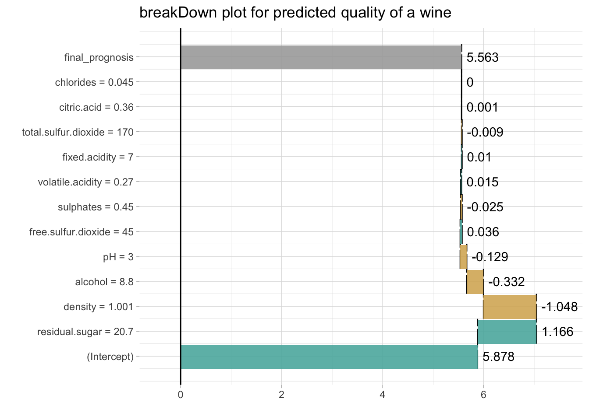
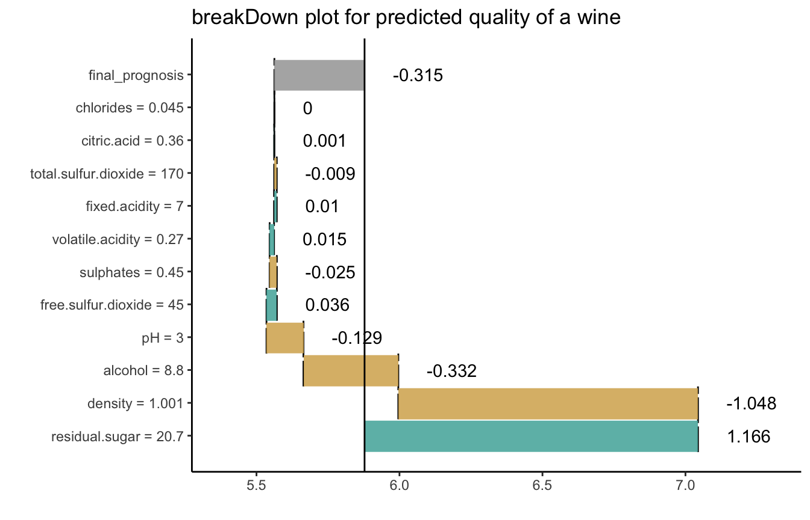
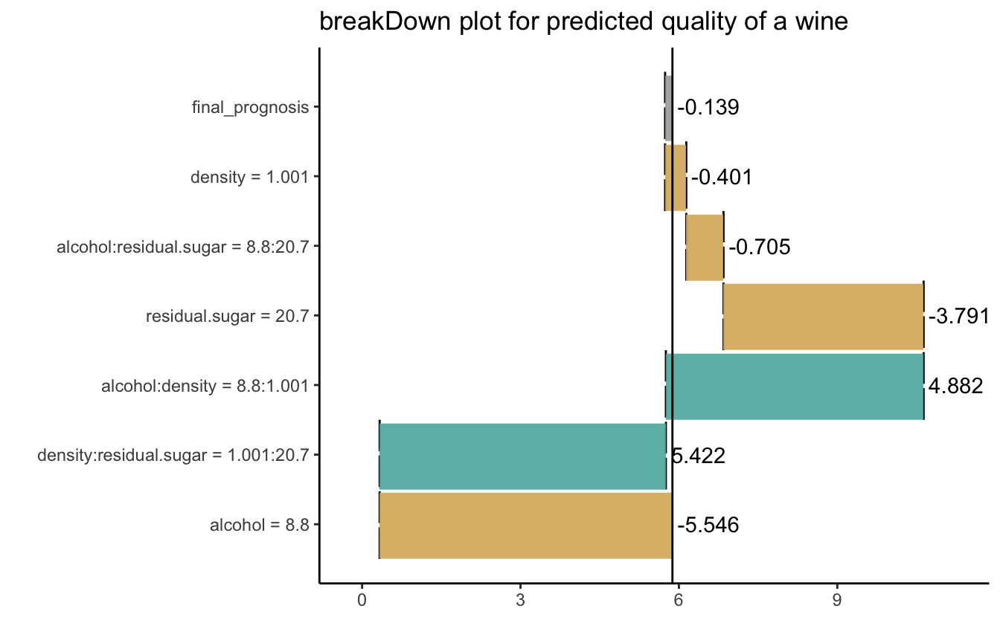

breakDown plots for the linear models
Przemyslaw Biecek
2019-03-27
break_lm.RmdHere we will use the wine quality data (https://archive.ics.uci.edu/ml/machine-learning-databases/wine-quality/winequality-white.csv) to present the breakDown package for lm models.
First, let’s download the data from URL
url <- 'https://archive.ics.uci.edu/ml/machine-learning-databases/wine-quality/winequality-white.csv'
wine <- read.table(url, header = T, sep=";")
head(wine, 3)
#> fixed.acidity volatile.acidity citric.acid residual.sugar chlorides
#> 1 7.0 0.27 0.36 20.7 0.045
#> 2 6.3 0.30 0.34 1.6 0.049
#> 3 8.1 0.28 0.40 6.9 0.050
#> free.sulfur.dioxide total.sulfur.dioxide density pH sulphates alcohol
#> 1 45 170 1.0010 3.00 0.45 8.8
#> 2 14 132 0.9940 3.30 0.49 9.5
#> 3 30 97 0.9951 3.26 0.44 10.1
#> quality
#> 1 6
#> 2 6
#> 3 6Now let’s create a liner model for quality.
model <- lm(quality ~ fixed.acidity + volatile.acidity + citric.acid + residual.sugar + chlorides + free.sulfur.dioxide + total.sulfur.dioxide + density + pH + sulphates + alcohol,
data = wine)The common goodness-of-fit parameteres for lm model are R^2, adjusted R^2, AIC or BIC coefficients.
summary(model)$r.squared
#> [1] 0.2818704
summary(model)$adj.r.squared
#> [1] 0.2802536
BIC(model)
#> [1] 11197.94They assess the overall quality of fit. But how to understand the factors that drive predictions for a single observation?
With the breakDown package!
library(breakDown)
library(ggplot2)
new_observation <- wine[1,]
br <- broken(model, new_observation)
br
#> contribution
#> (Intercept) 5.878
#> residual.sugar = 20.7 1.166
#> density = 1.001 -1.048
#> alcohol = 8.8 -0.332
#> pH = 3 -0.129
#> free.sulfur.dioxide = 45 0.036
#> sulphates = 0.45 -0.025
#> volatile.acidity = 0.27 0.015
#> fixed.acidity = 7 0.010
#> total.sulfur.dioxide = 170 -0.009
#> citric.acid = 0.36 0.001
#> chlorides = 0.045 0.000
#> final_prognosis 5.563
#> baseline: 0
# different roundings
print(br, digits = 2, rounding_function = signif)
#> contribution
#> (Intercept) 5.90000
#> residual.sugar = 20.7 1.20000
#> density = 1.001 -1.00000
#> alcohol = 8.8 -0.33000
#> pH = 3 -0.13000
#> free.sulfur.dioxide = 45 0.03600
#> sulphates = 0.45 -0.02500
#> volatile.acidity = 0.27 0.01500
#> fixed.acidity = 7 0.00950
#> total.sulfur.dioxide = 170 -0.00900
#> citric.acid = 0.36 0.00057
#> chlorides = 0.045 0.00019
#> final_prognosis 5.60000
#> baseline: 0
print(br, digits = 6, rounding_function = round)
#> contribution
#> (Intercept) 5.877909
#> residual.sugar = 20.7 1.165904
#> density = 1.001 -1.047875
#> alcohol = 8.8 -0.331669
#> pH = 3 -0.129216
#> free.sulfur.dioxide = 45 0.036178
#> sulphates = 0.45 -0.025162
#> volatile.acidity = 0.27 0.015355
#> fixed.acidity = 7 0.009514
#> total.sulfur.dioxide = 170 -0.009041
#> citric.acid = 0.36 0.000570
#> chlorides = 0.045 0.000191
#> final_prognosis 5.562658
#> baseline: 0
plot(br) + ggtitle("breakDown plot for predicted quality of a wine")
Use the baseline argument to set the origin of plots.
br <- broken(model, new_observation, baseline = "Intercept")
br
#> contribution
#> residual.sugar = 20.7 1.166
#> density = 1.001 -1.048
#> alcohol = 8.8 -0.332
#> pH = 3 -0.129
#> free.sulfur.dioxide = 45 0.036
#> sulphates = 0.45 -0.025
#> volatile.acidity = 0.27 0.015
#> fixed.acidity = 7 0.010
#> total.sulfur.dioxide = 170 -0.009
#> citric.acid = 0.36 0.001
#> chlorides = 0.045 0.000
#> final_prognosis -0.315
#> baseline: 5.877909
plot(br) + ggtitle("breakDown plot for predicted quality of a wine")
Works for interactions as well
model <- lm(quality ~ (alcohol + density + residual.sugar)^2,
data = wine)
new_observation <- wine[1,]
br <- broken(model, new_observation, baseline = "Intercept")
br
#> contribution
#> alcohol = 8.8 -5.546
#> density:residual.sugar = 1.001:20.7 5.422
#> alcohol:density = 8.8:1.001 4.882
#> residual.sugar = 20.7 -3.791
#> alcohol:residual.sugar = 8.8:20.7 -0.705
#> density = 1.001 -0.401
#> final_prognosis -0.139
#> baseline: 5.877909
plot(br) + ggtitle("breakDown plot for predicted quality of a wine")